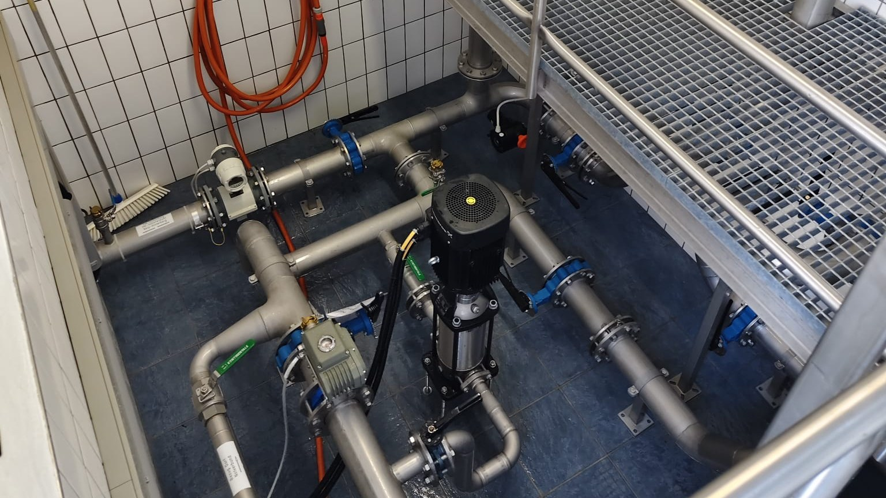

Die Wassergenossenschaft Sulzberg-Hinterberg-Schönenbühl versorgt die Gebiete Hinterberg, Schönenbühl, Hompmann und Eschau der Gemeinde Sulzberg zuverlässig mit frischem Trinkwasser aus der Region.
| Gebühr | Betrag |
|---|---|
| Wasserpreis | € 1,00 / m³ |
| Grundgebühr + Zählermiete | € 8,00 / Monat |
| Anschlussgebühr bis 1.000 m³ umbauter Raum | € 1.900,00 |
| Zusätzlicher m³ umbauter Raum | € 1,90 / m³ |
Alle Preise netto zzgl. 10% MwSt.
Wasserhärte: 11 – 14 °dH (mittelhart)
Unser Wasser wird regelmäßig untersucht und entspricht allen gesetzlichen Anforderungen. Die folgenden Werte stammen aus den Probenahmen vom 20.05.2026 (Umweltinstitut Vorarlberg).
| Parameter | Hinterberg | Schönenbühl |
|---|---|---|
| Gesamthärte | 14,3 °dH | 11,4 °dH |
| pH-Wert | 7,5 | 7,6 |
| Leitfähigkeit (25 °C) | 511 µS/cm | 355 µS/cm |
| Calcium | 75 mg/l | 57 mg/l |
| Magnesium | 17 mg/l | 13 mg/l |
| Natrium | 4,3 mg/l | 3,1 mg/l |
| Nitrat | 11 mg/l | 6,8 mg/l |
| Chlorid | 3,1 mg/l | 1,8 mg/l |
| Sulfat | 10 mg/l | 8,4 mg/l |
| Eisen | < 2 µg/l | < 5 µg/l |
| Mikrobiologie | unauffällig | unauffällig |
Grenzwert Nitrat lt. Trinkwasserverordnung: 50 mg/l. Beide Anlagen liegen weit darunter.